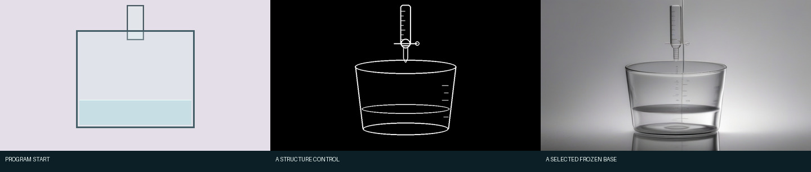
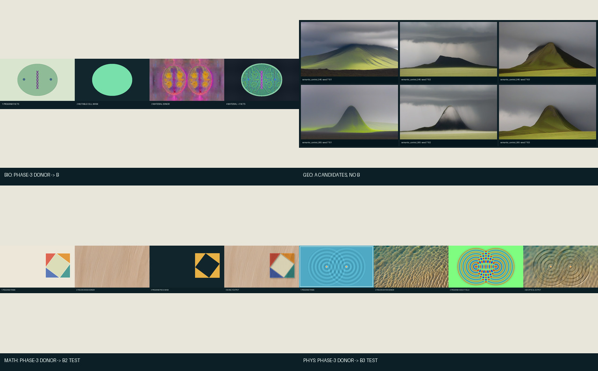

Live-Document / Stage 2 / Phase 9 documentation audit
一张 A 底图，怎样变成
四张 B 关键帧
这份报告不再分别介绍抽象的“路线 A”和“路线 B”，而是沿着一个实际文件 从生成到消费的路径解释。Phase 7 中只有化学滴定完整执行了本轮 A→B，因此它是本文 主案例；其他案例单独标明真实来源，不再假装都经过了 A。
先直接回答这三个问题
- “Canny → Canny ControlNet → 残差 → SDXL”对吗？ 对，这是标准 Canny ControlNet 链路。但“残差”不是两张图片相减得到的像素差， 而是 ControlNet 计算出的多层特征修正张量。本次被选中的烧杯图有一个重要例外： 它没有把自动 Canny 结果送进 ControlNet，而是送入了单独绘制的器材线稿。
- 烧杯的
phase7_semantic_control.png和程序图有关系吗？ 有“表达同一个滴定装置”的人工设计关系，但没有自动文件派生关系。 它不是从本帧clean.png检边得到，也没有读取semantic_layers.json。早期实验的 build_control.py 用固定像素坐标画了烧杯、滴定管、活塞和液面；Phase 7 把那张冻结模板原样复制为 控制输入。因此当前实现存在模板与程序图以后可能不一致的风险。 - 哪些参数真正控制了结果？
本次真正生效的是提示词、1024×576 尺寸、30 个去噪步、guidance 6.0、
ControlNet scale 0.65、seed 7101、Euler scheduler 和 FP16 权重。
配置里虽然还写着
strength: 0.5，但 T2I 分支没有把它传给模型， 所以它没有参与这张图。后文逐项解释每个参数增大或减小时会发生什么。
先把 Canny、ControlNet、SDXL 和 FP16 分开
“SDXL Base 1.0 FP16 + SDXL Canny ControlNet FP16”看起来像一个很长的模型名， 实际是两个神经网络权重一起运行，再加上一个普通图像算法。它们不是同一个东西：
| 名称 | 它是什么 | 输入 | 输出 | 本项目里负责什么 |
|---|---|---|---|---|
| Canny | 经典边缘检测算法，不是生成模型 | 一张普通 RGB/灰度图片和高低阈值 | 黑底白线的二值边缘图 | 可以把程序截图自动转成 ControlNet 能读的线图；但本次选中结果没有使用自动 dense Canny |
| SDXL Canny ControlNet FP16 | 专门学习“边缘图应怎样约束 SDXL”的辅助神经网络 | 控制图、当前带噪 latent、当前去噪时间步、文字语义 | 多层控制残差，不是 RGB 图片 | 告诉 SDXL 的不同网络层：烧杯、滴定管和液面结构应出现在哪里 |
| SDXL Base 1.0 FP16 | 真正负责生成图像内容的主扩散模型 | 随机 latent、正负提示词语义、ControlNet 残差和当前时间步 | 逐步去噪后的 latent；随后由 VAE 解码为图片 | 生成玻璃、折射、阴影、实验室背景和整体真实感 |
| FP16 | 模型权重和计算使用 16-bit floating point | 同一个模型的半精度权重文件 | 更低显存占用和较快计算 | 它不是画风，也不表示最终 PNG 是“16 位图”；最终保存的是普通 RGB PNG |
Canny 到底做了什么
Canny 会先计算图像亮度梯度，保留局部最强边缘，再通过高低阈值和连通关系决定哪些 像素变成白线。Phase 7 保存的自动 dense Canny 使用阈值 5/15，并膨胀一次。 它只知道“这里亮度突然变化”，不知道哪条线是烧杯、文字、液面还是无关装饰。
本次接受的 phase7_semantic_control.png 则不是对程序截图直接运行
Canny 得到的，也不是由 Phase 7 的程序语义层自动生成的。准确血缘是：
早期实验的 build_control.py 在 1024×576 画布上用硬编码坐标绘制器材
→ 保存 semantic_apparatus_line_art.png
→ Phase 7 原样复制为 phase7_semantic_control.png。
这张模板只留下一个烧杯、一个滴定管、活塞、滴嘴和液面。因为它仍是黑底白线、
形态接近 Canny 边缘，所以可以输入训练在 Canny 图上的 ControlNet；ControlNet
并不要求推理时一定再调用一次 Canny 算法。
标准链路： 普通图片 / 程序图 → Canny 算法 → 边缘图 → Canny ControlNet → 特征残差 → SDXL 本次接受链路： 固定坐标器材模板 ─────────────→ 器材线图 → Canny ControlNet → 特征残差 → SDXL 本次仅作对照： 程序 clean.png → dense Canny（阈值 5/15 + 膨胀一次）→ 保存，但没有送入选中管线

ControlNet 与 SDXL 的连接关系
正向/负向文字
│
└→ SDXL tokenizer + 两个 text encoder → 文字语义向量 ───────────┐
│
固定器材模板 → 黑白结构控制图 → Canny ControlNet ─→ 多层控制残差 ───┤
↑ × 0.65 │
随机 latent + 当前时间步 + 文字语义 ────────┘ │
复现编号 7101 → 随机初始 latent ─→ Euler scheduler，循环 30 步 ──────┤
▼
SDXL Base UNet
│
去噪后的 latent
│
SDXL VAE
│
1024×576 RGB PNG
ControlNet 不替代 SDXL。它在每个去噪时间步观察控制图，
同时接收当前带噪 latent、时间步和文字语义，输出一组与 SDXL 不同层尺寸对应的
残差特征。Diffusers 把这些输出乘 0.65，再分别作为
down_block_additional_residuals 和
mid_block_additional_residual 加进 SDXL UNet。
这里的“残差”可理解为网络内部的结构修正信号，不是 RGB 图片，也不是最终图减原图。
SDXL 仍然负责决定白线之间填什么材质、是什么光照，以及背景长什么样。如果只有
ControlNet 而没有 SDXL Base，不会得到最终图片。
一个去噪步内部实际发生什么
- Euler scheduler 按当前时间步缩放带噪 latent。
- ControlNet 读取该 latent、时间步、文字语义和器材线图，产生 down-block 与 mid-block 的多层特征残差，并乘 ControlNet scale。
- SDXL UNet 在相同 latent 上运行，同时接收文字语义和上述残差，分别预测 “无条件/负向”与“正向”两份噪声。
- guidance 6.0 合并两份预测；Euler scheduler 据此把 latent 更新到下一步。
noise = noise_uncond + 6.0 × (noise_text - noise_uncond) latent_next = Euler.step(noise, current_timestep, latent_current)
以上循环 30 次，最后 VAE 才把 latent 解码为人能看到的 RGB 图片。
本次实际管线的输入和输出
| 组件 | 本次实际输入 | 本次实际输出/用途 |
|---|---|---|
| 文字 tokenizer | 完整正向提示词 65 token、负向提示词 59 token | 两个 SDXL text encoder 使用的语义向量；两者都低于 77 token 上限，没有截断 |
| 随机输入 | torch.Generator(device="cuda").manual_seed(7101) |
生成初始随机 latent；项目没有另存一张“噪声图片”，复现依靠编号和完整运行配置 |
| ControlNet 图像输入 | 1024×576 的
phase7_semantic_control.png |
ControlNet 多层残差，缩放系数 0.65 |
| SDXL Base | 随机 latent + 文字语义 + ControlNet 残差 | raw/semantic_control_065/seed_7101.png |
| B | 上面的 PNG + 四帧液体遮罩和 pH 数值场 | 四张确定性关键帧；不再调用 SDXL 或 ControlNet |
controlnet_t2i，即从随机噪声开始的 text-to-image。
程序的 clean.png 和 semantic_layers.json 被登记为实验来源，
供人审计和后续 B 使用，但在本次 A 中既没有作为 img2img 初始图片送进 SDXL，
也没有用来生成实际器材控制图。真正进入图片端口的只有那张冻结黑白模板。
配置中的 strength: 0.5 来自共享实验 schema；在这条 T2I 调用中没有传给
pipeline，因此不影响选中结果。参数字典：每个数到底控制什么
下面区分三件常被混淆的事：guidance 控制文字牵引， ControlNet scale 控制结构线牵引，img2img strength 控制对初始图片的改写幅度。三者不是同一个旋钮。
| 参数 | 本次值/是否生效 | 它控制什么 | 增大或减小的通常影响 |
|---|---|---|---|
pipeline_mode | controlnet_t2i，生效 |
决定从随机 latent 开始，还是从一张初始图加噪后开始 | 本次是 T2I；没有可调的“保留原图百分比” |
| 正向提示词 | 65 token，生效且未截断 | 希望出现的场景、器材、玻璃材质、视角和光照 | 改词会改变语义和外观；不是固定空间位置的可靠手段 |
| 负向提示词 | 59 token，生效且未截断 | 在 CFG 的“无条件/负向”分支中压制多余器材、文字、塑料感等 | 过长或互相冲突可能削弱效果；本次两套 tokenizer 上限均为 77 |
guidance_scale也叫 CFG | 6.0，生效 | 放大正向预测与负向预测之间的差，决定模型多用力服从文字 | 更高通常更贴文字，但可能过饱和、生硬或出现伪影；更低更自由，也更可能漏掉要求。 它不控制线稿强度 |
controlnet_conditioning_scale |
试 0.65 / 0.80；选中 0.65，生效 | 乘在 ControlNet 多层残差上的幅度系数；这里“scale”是特征信号强度， 不是把图片尺寸缩放到 65% | 更高通常更严格贴线，但会压缩 SDXL 的材质自由度，可能留下硬线、塑料感； 更低材质更自由，但器材形状更可能漂移 |
strengthimg2img strength | 配置写 0.5， 本次未生效 | 仅在 img2img 中决定给初始图加入多少噪声、 允许离开初始图多远 | 若在 img2img 使用：高值改写更大，低值更保留原图。 本次 T2I 调用根本没有这个参数；不要把 0.5 与 ControlNet 的 0.65 混淆 |
num_inference_steps | 30，生效 | UNet + ControlNet + scheduler 的去噪循环次数 | 更多步更慢，通常给模型更多细化机会，但不保证单调变好；减少则更快 |
seed | 7101，生效；另试 7102、7103 | 初始化 GPU 随机 latent；它是复现编号，不是场景语义或质量分数 | 换 seed 相当于换噪声起点，构图、反射和细节都会变化。精确复现还需相同权重、 软件、硬件与参数 |
width × height | 1024×576，生效 | 输出与控制的空间网格、16:9 画幅 | 提高尺寸增加显存和计算量，也可能改变构图；它与 ControlNet scale 无关 |
scheduler | EulerDiscreteScheduler，生效 |
安排 30 个噪声时间步，并把 UNet 的噪声预测更新成下一份 latent | 换 scheduler 即使 seed 不变也可能改变结果；它不是另一个模型 |
control_guidance_start/end | 未显式传入， 使用 Diffusers 默认 0.0 / 1.0 | ControlNet 在整个去噪进度的哪一段介入 | 本次从第一步持续到最后一步；缩短区间可让后段更自由，但本轮未做此扫描 |
guess_mode | 未显式传入，默认 false | 是否让 ControlNet 尝试脱离提示词自行识别控制图内容 | 本次关闭；没有把它作为优化变量 |
dtype / variant | FP16，生效 | 权重加载与张量计算精度，主要影响显存、速度和极小数值差异 | 它不控制“真实感强度”，也不表示输出 PNG 是 16-bit 图 |
把本次选中结果还原成一次模型调用
项目代码先加载 SDXL Base、Canny ControlNet 与它们各自的 FP16 本地权重， 然后实际调用等价于：
generator = torch.Generator(device="cuda").manual_seed(7101)
result = pipeline(
prompt=positive_prompt,
negative_prompt=negative_prompt,
image=phase7_semantic_control_png, # ControlNet 图，不是 img2img 初始图
width=1024,
height=576,
num_inference_steps=30,
guidance_scale=6.0,
controlnet_conditioning_scale=0.65,
generator=generator,
).images[0]
# 注意：这里没有 clean.png，也没有 strength=0.5
Phase 7 实际分支可在
image_experiment.py
中查看。历史 generate.json 对每条候选都统一写了
img2img_strength: 0.5，classification 也沿用了
“Img2Img output”；这两个字段是共享记录代码留下的误导性元数据，不能覆盖
pipeline_mode: controlnet_t2i 和实际函数分支。报告以实际调用代码为准。
“两个 FP16 模型”对应哪些本地权重
主模型 ID：stabilityai/stable-diffusion-xl-base-1.0；
辅助模型 ID：diffusers/controlnet-canny-sdxl-1.0。
主模型包含两个 text encoder、UNet 和 VAE；ControlNet 有自己的
diffusion_pytorch_model.fp16.safetensors。具体本地路径和每个权重文件
SHA-256 位于
model_fingerprints.json。
运行时使用 Diffusers 0.35.2、Torch 2.9.1、EulerDiscreteScheduler、30 步。
步骤 0：程序先决定“发生什么”
下面四张不是模型图，而是 Phase 2 程序的无标注关键帧。程序在这一阶段已经确定： 液体区域在哪里、液面多高、整体 pH 是多少、机制帧是否有局部高 pH 羽流。A/B 都不得 修改这些因果关系。

| 状态 | 整体 pH | 液体内 min / mean / max | 程序液面 y | 液体像素 |
|---|---|---|---|---|
| 起始 | 2.301 | 2.301 / 2.301 / 2.301 | 238 | 15900 |
| 局部反应 | 2.306 | 2.306 / 4.120 / 11.304 | 237 | 16165 |
| 接近终点前 | 3.719 | 3.719 / 3.719 / 3.719 | 234 | 16960 |
| 滴定终点 | 8.979 | 8.979 / 8.979 / 8.979 | 233 | 17225 |
mask（遮罩）实际是什么
白色区域是 chem01_liquid_region：程序明确声明“这是液体”。
它不是给人看的装饰，也不是模型自动猜出来的。B 用它裁出允许承载 pH 状态的区域；
黑色区域不能被液体颜色修改。

pH scalar field（标量场）实际是什么
每个液体像素保存一个浮点 pH。下图只是把数值着色方便人查看：蓝色偏酸，
红色偏碱。机制帧中间的暖色区域就是局部羽流；起始和结果帧接近均匀酸性；
终点整杯进入碱性指示区。B 读取的是原始 .npy 数值，不是这张彩色预览。

步骤 1：A 只生成“真实烧杯长什么样”
A 的模型输入有两部分。第一部分是黑底白线的结构控制图，固定一个烧杯、一个滴定管、 正视相机和液面大位置；这就是 ControlNet 的 conditioning。第二部分是文字，只描述 玻璃、折射、光照和场景外观。需要再次强调：这里的线图是固定器材模板，不是当前 程序关键帧自动产生的。

A 选中底图时使用的完整提示词和参数
正向提示词
Straight-on photo of one glass beaker under one glass burette, locked centered camera, clear glass, colorless liquid, realistic refraction and reflections, neutral laboratory, initial acidic solution is colorless with no pink region, one beaker, one burette, fixed liquid level and layout, no text
负向提示词
extra beakers, extra burettes, extra tubes, missing vessel, moved liquid level, pouring stream, crystals, foam, large bubbles, text, labels, arrows, user interface, watermark, plastic toy, metallic container, cropped apparatus, tilted camera, perspective view, blur
模型：SDXL Base 1.0 FP16 + SDXL Canny ControlNet FP16；尺寸 1024×576； 30 步；CFG guidance 6.0；ControlNet scale 试 0.65 和 0.80；每档三个固定复现编号。 所以起始场景共有 2×3=6 张 raw 候选。

步骤 2：为什么只冻结一张，而不是让 A 直接画四张
Phase 7 确实做过“同一复现编号 + 四条状态提示词，各生成一帧”的实验。 下面就是实际结果。单张玻璃很好，但不同状态改变了背景光、液体外观和构图；文字中的 “局部粉色”也经常被扩大。它们被保留为失败证据，不进入最终序列。

被选中的冻结文件
output/phase-7/route-a/experiments/EXP-P7-A-chem-01-00_start/raw/semantic_control_065/seed_7101.png SHA-256: 42f00932056e2614b70b706bbd5e836135689d1f7de1a36e8dbdfd8549674e35
化学 B manifest 中的 donor 路径和哈希与上面完全相同。这是本轮真正的 A→B 文件级顺承，而不是报告文字上的推测。
步骤 3：B 怎样把程序状态放进真实底图
B 同时读取两类输入：
- 不变输入：A 选中的同一张真实烧杯图。
- 逐帧输入：每一帧的液体遮罩、pH 场、液面高度和机制状态。
程序图是 640×360，A 底图是 1024×576，不能把程序矩形直接贴上去。B 先做 surface calibration（表面标定）：把程序液体裁到自身最小矩形，再映射到真实烧杯中的 梯形表面。下图粉色边线就是实际使用的真实液体目标区。

B 的实际数值变换
真实表面的左右范围是 x=350–675，底边 y=493；左右下角收窄到 x=370 和 652。
顶边 y 根据每帧 liquid_level_y 线性换算，边缘做 5 px 羽化。
indicator = 1 / (1 + exp(-(pH - 8.15) * 2.5)) alpha = indicator × 0.52 × feathered_liquid_mask
indicator 把程序 pH 转成酚酞粉色强度。粉色目标还会按 A 底图原有亮度缩放， 所以杯中的高光和反射不会被纯色矩形盖住。机制帧额外在滴定管尖端加入一枚羽化液滴； 光学边缘强度为 0.38。B 在此阶段没有调用 SDXL，全部是确定性数组计算。
步骤 4：最终得到的四张 B 关键帧

自动检查确认：
- 四帧指示剂液体均值顺序为 0、0.143768、0.000015、0.879632；
- 器材之外的冻结背景最大像素差为 0；
- B 输出 3 个变体 × 4 帧，但生产选择固定为
optical_tint_plus_drop，重跑不重新挑图； - B 的图片模型调用数为 0。
其他案例当时到底有没有 A→B

| 案例 | 真实外观来源 | 后续 | 能否称为 Phase 7 A→B |
|---|---|---|---|
| CHEM-01 | Phase 7 A 的烧杯候选 7101 | Phase 7 B 生成四帧 | 可以，完整直接血缘 |
| BIO-01 | Phase 3 已保存的细胞供体 3104 | Phase 7 B 抽取纹理统计 | 不可以，是历史供体→B |
| GEO-02 | Phase 7 A 的地形候选 | 没有继续生成 B 关键帧 | 不可以，只有 A |
| MATH-02 | Phase 3 木纹供体 3101 | Phase 7 C；Phase 8 B2 对照 | 不可以，是历史供体→后端 |
| PHYS-01 | Phase 3 水体供体 3101/3102 | Phase 7 C；Phase 8 B3 对照 | 不可以，是历史供体→后端 |
放回通用项目后的真实运行规则
程序输出：四个状态 + 遮罩/对象/高度场
│
├─ 已经有合适照片或冻结供体 ─────────────┐
│ │
└─ 没有合适外观 → A 生成候选 → 冻结一张 ─┤
▼
B
┌──────────────────┼──────────────────┐
B1 B2 B3
区域/标量状态 对象附着纹理 高度/法线光学
└──────────────────┼──────────────────┘
▼
多张正确关键帧
▼
视频模型生成过渡
A 是可选的一次性准备步骤；B 是必需的多帧生产步骤。即使跳过 A，B 也必须记录冻结 外观来自哪里。即使使用 A，B 也只能读取一张已冻结结果，不能每帧重新生成。
怎样复现这条实际链
以下命令不会重新抽候选：Phase 7 B/C 使用现有冻结文件重建；Phase 9 只重建预览、 文件血缘和本报告。
.venv/bin/python -m modules.video_model.stage2.phase7_hybrid_pbr .venv/bin/python -m modules.video_model.stage2.phase9_ab_lineage .venv/bin/python -m pytest modules/video_model/stage2/tests/test_phase9.py -q
代码与证据：
状态：passed。本报告新增模型调用： 0 张图片、0 段视频。